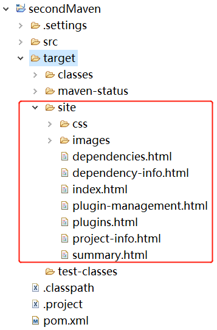
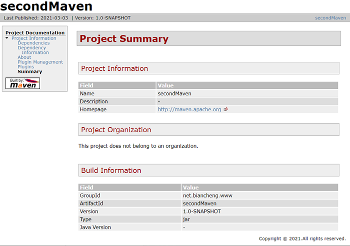

Maven site(站点)
Maven 不仅仅是一款项目构建和依赖管理工具，它还能够聚合项目信息，促进项目团队间地交流。POM 中可以包含各种项目信息，例如：项目描述、SCM 地址、许可证信息，开发者信息等。用户可以使用 Maven 提供的 maven-site-plugin 插件让 Maven 生成一个 Web 站点， 以站点的形式发布以上信息。
以 secondMaven 项目为例，修改其 pom.xml 中的配置，添加该插件到项目中。
打开命令行窗口，跳转到 secondMaven 的目录中，执行如下 mvn 命令。
执行结果如下。
Maven 命令运行完毕后，可以在项目的 target\site 目录下找到 Maven 生成的站点文件，如下图。
以 secondMaven 项目为例，修改其 pom.xml 中的配置，添加该插件到项目中。
<project xmlns="http://maven.apache.org/POM/4.0.0" xmlns:xsi="http://www.w3.org/2001/XMLSchema-instance"
xsi:schemaLocation="http://maven.apache.org/POM/4.0.0 http://maven.apache.org/maven-v4_0_0.xsd">
<modelVersion>4.0.0</modelVersion>
<groupId>net.biancheng.www</groupId>
<artifactId>secondMaven</artifactId>
<packaging>jar</packaging>
<version>1.0-SNAPSHOT</version>
<name>secondMaven</name>
<url>http://maven.apache.org</url>
<build>
<plugins>
<!--添加site 插件-->
<plugin>
<groupId>org.apache.maven.plugins</groupId>
<artifactId>maven-site-plugin</artifactId>
<version>3.7.1</version>
</plugin>
</plugins>
</build>
<dependencies>
<dependency>
<groupId>junit</groupId>
<artifactId>junit</artifactId>
<version>3.8.1</version>
<scope>test</scope>
</dependency>
<dependency>
<groupId>net.biancheng.www</groupId>
<artifactId>helloMaven</artifactId>
<scope>system</scope>
<version>1.0-SNAPSHOT</version>
<systemPath>D:\maven\helloMaven\target\helloMaven-1.0-SNAPSHOT.jar</systemPath>
</dependency>
</dependencies>
</project>
打开命令行窗口，跳转到 secondMaven 的目录中，执行如下 mvn 命令。
mvn site
执行结果如下。
[INFO] Scanning for projects... [WARNING] [WARNING] Some problems were encountered while building the effective model for net.biancheng.www:secondMaven:jar:1.0-SNAPSHOT [WARNING] 'dependencies.dependency.systemPath' for net.biancheng.www:helloMaven:jar should use a variable instead of a hard-coded path D:\maven\helloMaven\target\helloMaven-1.0-SNAPSHOT.jar @ line 37, column 16 [WARNING] [WARNING] It is highly recommended to fix these problems because they threaten the stability of your build. [WARNING] [WARNING] For this reason, future Maven versions might no longer support building such malformed projects. [WARNING] [INFO] [INFO] -------------------< net.biancheng.www:secondMaven >-------------------- [INFO] Building secondMaven 1.0-SNAPSHOT [INFO] --------------------------------[ jar ]--------------------------------- [INFO] [INFO] --- maven-site-plugin:3.7.1:site (default-site) @ secondMaven --- [WARNING] Input file encoding has not been set, using platform encoding GBK, i.e. build is platform dependent! [INFO] configuring report plugin org.apache.maven.plugins:maven-project-info-reports-plugin:3.0.0 [INFO] 15 reports detected for maven-project-info-reports-plugin:3.0.0: ci-management, dependencies, dependency-info, dependency-management, distribution-management, index, issue-management, licenses, mailing-lists, modules, plugin-management, plugins, scm, summary, team [INFO] Rendering site with default locale English (en) [INFO] Relativizing decoration links with respect to localized project URL: http://maven.apache.org [INFO] Rendering content with org.apache.maven.skins:maven-default-skin:jar:1.2 skin. [INFO] Generating "Dependencies" report --- maven-project-info-reports-plugin:3.0.0:dependencies [WARNING] Artifact net.biancheng.www:helloMaven:jar:1.0-SNAPSHOT has no file and won't be listed in dependency files details. [INFO] Generating "Dependency Information" report --- maven-project-info-reports-plugin:3.0.0:dependency-info [INFO] Generating "About" report --- maven-project-info-reports-plugin:3.0.0:index [INFO] Generating "Plugin Management" report --- maven-project-info-reports-plugin:3.0.0:plugin-management [INFO] Generating "Plugins" report --- maven-project-info-reports-plugin:3.0.0:plugins [INFO] Generating "Summary" report --- maven-project-info-reports-plugin:3.0.0:summary [INFO] ------------------------------------------------------------------------ [INFO] BUILD SUCCESS [INFO] ------------------------------------------------------------------------ [INFO] Total time: 2.260 s [INFO] Finished at: 2021-03-03T14:29:13+08:00 [INFO] ------------------------------------------------------------------------
Maven 命令运行完毕后，可以在项目的 target\site 目录下找到 Maven 生成的站点文件，如下图。

图1：项目站点文件
双击打开 index.html 查看站点。

图2：项目站点
关注公众号「站长严长生」，在手机上阅读所有教程，随时随地都能学习。内含一款搜索神器，免费下载全网书籍和视频。

微信扫码关注公众号